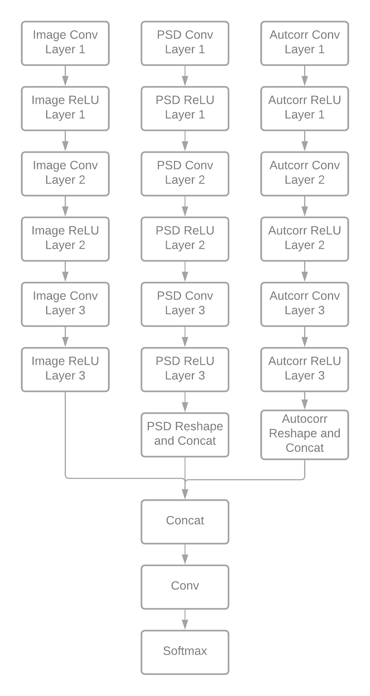

API#
Automatic ICA labeling for MEG, EEG and iEEG data.
This is the application programming interface (API) reference
for classes (CamelCase names) and functions
(underscore_case names) of MNE-ICALabel.
Most-used functions#
|
Automatically label the ICA components with the selected method. |
ICLabel#
This is the model originally available for EEGLab. The model was ported from matconvnet using pytorch.
Architecture:
{kind=link}
The model has three inputs: image, psd, and autocorrelation features. To encourage generalization, the image features are rotated and negated, thus quadrupling the feature. The psd and autocorrelation features are copied to the new image features. Then, the predicted probabilities are averaged over all four images.
|
Generate the features for ICLabel neural network. |
|
Run the ICLabel network on the provided set of features. |
Annotating Components#
To facilitate annotation of the ICA components, we provide an API that conforms to the derivative standard of BIDS for EEG data.
|
Mark a component with a label. |
|
Write channels tsv file for ICA components. |